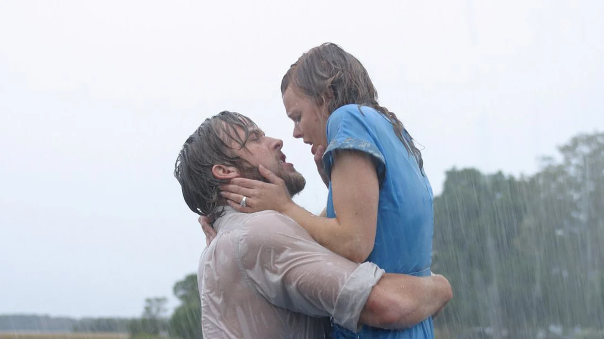

2004 · 2h 3min · Romàntica
Una història d'amor épica que transcorre entre els anys 40 i el present. En Noah i l'Allie es coneixen un estiu i s'enamoren perdudament, però les diferències de classe social els separen. Anys després, ja casada amb un altre, l'Allie retroba en Noah i haurà de prendre la decisió més difícil de la seva vida.